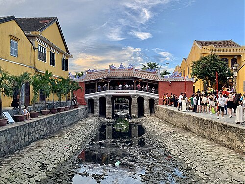
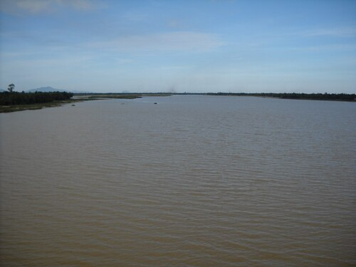
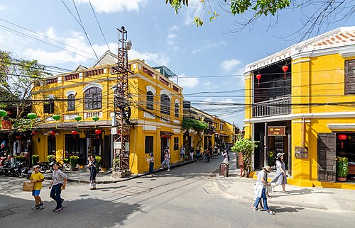

This map shows 6 of the most-searched sights in Hoi An as photo spots, ranked by how often people search for them: Japanese Bridge, Hoai River Lanterns, Fujian Assembly Hall, Tan Ky Old House and An Hoi Bridge lead the list. Every spot has a pin on the subject and a phone icon showing where to stand, with tips for shooting it on your phone: which lens to use, how to frame it, a settings tip and the best time of day. Directions and Navigate buttons take you to the standing point on foot or by public transport. 3 spots are free to view; the full map is for members.
The 3 free photo spots
1Japanese Bridge

The Japanese Bridge (Chùa Cầu) is a small covered footbridge with a temple built into it, and it is a landmark of Hoi An's Ancient Town. It photographs well because the shape is so clear: a sheltered wooden walkway on brick supports, with a tiled roof in three sections, over a narrow canal. The bridge is about 18 metres long and 3 metres wide. Japanese merchants began building it in 1593 and finished in 1595, and a temple was added on top in 1653. It has been repaired and renovated several times since, so it now mixes Japanese, Vietnamese and Chinese details.
It is on Nguyễn Thị Minh Khai, at the western end of the street. From there you look east along the whole length of the bridge, with the street leading up to it. A local guide recommends going before about 6:30am, when the street is usually almost empty. Crowds build from about 19:00 onward, and the bridge is often full of people in the evening, so evening shots may include a lot of people.
If you have time, there are two other views. Trần Phú shows the full bridge face with its red roof and yellow merchant houses, reflected in the canal. Cầu An Hội, a separate bridge, shows the Japanese Bridge across the Hoai River, and it works especially well at sunset. Photographing the outside is free, but crossing the bridge or entering the temple needs a ticket.
Where it is: The bridge is in the old Japanese Quarter of Hoi An's Ancient Town, crossing a small canal.
Shooting it on your phone
Lens: Start with the default lens (1x) so the street and the bridge both fit in the frame. Then try telephoto (2x or more, depending on your phone) to bring the bridge closer and make the street look more compressed. Use ultra-wide (0.5x) only if you want a lot of street in front, and keep the bridge near the middle of the frame so its sides don't stretch.
Where to stand: Stand on Nguyễn Thị Minh Khai (western end of the street, looking east along the length of the bridge). A long, head-on view of the bridge from the Japanese Quarter side, with the street leading up to it, usually empty of people. From there you get a long, head-on view of the bridge from the Japanese Quarter side, with the street leading up to it. The bridge is directly ahead, to the east.
Framing: Turn on gridlines and put the bridge's centre on the middle vertical line, so the street and roof look balanced. Hold the phone at chest height and keep it level so the roof line stays straight. For a different view, walk to Trần Phú for the full bridge face reflected in the canal, or to Cầu An Hội for the bridge across the river at sunset.
Settings tip: Tap on the bridge to set focus, then drag the exposure slider down a little so the sky doesn't wash out. In dim early light, use night mode and brace your elbows against your body or lean on a wall to keep the phone still. Take a Live Photo too, in case a passer-by walks into the frame and you want a different moment.
Best time: Before about 6:30am, when the street is usually almost empty. The bridge gets much busier from about 19:00 onwards.
2Thu Bồn River

The Thu Bồn is the river that Hoi An's Old Town looks out over, and the best way to photograph it is from a bridge, with the town laid out in front of you. From Cầu An Hội you can stand in the middle of the span and face the Old Town. From there you see its roofs and skyline across the water. As the light fades, the river reflects the buildings and the lanterns along the bank. Guides often call this one of the best sunset spots on the river, and it gives the widest view of the Old Town.
The river itself is a quiet, flat subject, so the picture works best when you include something on the far bank. Let the rooftops fill the middle of the frame and leave some water in the foreground for the reflections. If you want boats in the shot, Cầu Cẩm Nam is a good second choice. It shows traditional fishing boats and lantern boats on the river, with the Old Town skyline behind them. Further out, Cầu Cửa Đại looks over the wide river mouth, with fishing boats, sand barges and the sea on the horizon. It is some distance from the Old Town, so treat it as a separate outing.
Arrive a little before the light starts to go. Take a few frames while the sky is still bright, then more as the lanterns come on. It is worth checking the current situation on the bridge when you arrive.
Where it is: On the Thu Bồn River beside Hoi An's Old Town, at Cầu An Hội, the bridge that looks across the water to the Old Town's riverbank. The Thu Bồn itself lies further east along the river.
Shooting it on your phone
Lens: Start with the ultra-wide (0.5x) to take in the whole skyline and its reflections. Switch to the default lens (1x) for a cleaner, less stretched view of the roofs. Use telephoto (2x to 5x, depending on your phone) to pick out lanterns or a single boat on the far bank.
Where to stand: Stand on Cầu An Hội (middle of the span, facing the Old Town). The Old Town's skyline and roofs across the river, with the water reflecting the buildings and lanterns as the light fades. From there the photo shows the Old Town's skyline and roofs across the river, with the water reflecting the buildings and lanterns as the light fades. The Thu Bồn itself lies further east along the water.
Framing: Switch on gridlines and put the far bank on the upper third line, with water filling the lower part of the frame so the reflections show. Keep the phone level so the rooftops do not slope. If you want boats in the picture, Cầu Cẩm Nam is an alternative viewpoint, with fishing and lantern boats in front of the Old Town skyline.
Settings tip: Tap on the brightest part of the sky or the lanterns to focus. Then drag the exposure slider down a little so the lights keep their colour instead of turning white. After dark, use night mode and brace your elbows on the railing or hold the phone with both hands, so the shot stays sharp.
Best time: Around 5:00 to 6:30 PM for sunset and the lanterns. Sunset time changes with the season, so check it for your date.
5An Hoi Bridge

An Hoi Bridge crosses the Thu Bon river at the edge of Hoi An's Old Town, with the yellow An Hoi shophouses behind it in the side-on view. It works well for phone photos for two reasons. The bridge has a clear, graceful shape, and in the evening the lanterns and their reflection on the water give you a lot to frame.
The tip from guides and travel blogs is not to photograph it from the bridge itself, because from the deck you cannot see the bridge. Instead, stand on the Old Town riverbank, at the north-side approach, and shoot it side-on. From there the whole span fits in the frame, with its reflection in the river and the shophouses behind it. If you want a different picture, the bridge also suits a walk-through shot: lantern posts run away along the deck with people passing between them. Another option is the yellow Old Town waterfront, with its rooftops and boats on the river in the foreground.
The bridge gets busy and crowded in the evening, from about 19:00 to 21:00, so come a little earlier if you want a clear frame, and keep an eye on your belongings while you are there. The viewpoints come mostly from travel blogs, so use your own judgement on the ground.
Where it is: On the Thu Bon riverbank at the edge of Hoi An's Old Town, where the An Hoi shophouses face the water. The bank at the bridge's north-side approach is the best place for the photo.
Shooting it on your phone
Lens: Start with the default lens (1x) so the whole bridge, its reflection and the shophouses sit in one frame. Switch to ultra-wide (0.5x) if the bank is crowded and you cannot step back. Use telephoto (2x or more) for a closer shot of the lanterns on the deck.
Where to stand: Stand on Bạch Đằng (Old Town riverbank, at the bridge's north-side approach, facing the bridge side-on). The bridge seen side-on from the riverbank, with its reflection in the Thu Bon and the An Hoi shophouses behind it. From there the bridge is seen side-on, with its reflection in the Thu Bon and the An Hoi shophouses behind it.
Framing: Turn on gridlines and put the bridge along the lower third, with the water below it so the reflection is included. Keep the phone level so the bridge doesn't lean. For a second picture, try the Nguyễn Phúc Chu waterfront for the yellow rooftops and boats, or walk onto the deck for the lantern posts with people between them.
Settings tip: Tap on the bridge to focus, then drag the exposure slider down a little so the lanterns stay bright and the sky keeps its colour. As the light fades, use night mode and hold the phone still, resting your elbows on something solid if you can.
Best time: 17:30–18:30, when the lanterns are on and the sky still has colour. It is crowded from about 19:00 to 21:00.
3 more spots for members
These spots are on the map as grey numbered pins. Where to stand, the phone tips, photos and directions for them come with Explorer membership.
- 3Fujian Assembly Hall · members
- 4Tan Ky House · members
- 6Hoi An Museum · members
Get every spot with Explorer membership
Explorer opens every spot on every map in the library: where to stand, how to frame it on your phone and how to get there, plus the Xdatrys Maps app with maps saved on your phone for use without signal. $9.99 a month or $59.99 a year; cancel any time.
Join Explorer Compare free and Explorer
Not ready to join?
Get Pocket Lens, our free daily smartphone travel photography newsletter.
Free, and you can unsubscribe at any time. If the form does not show, sign up on our newsletter page.
Questions
What are the top photo spots in Hoi An?
The first three on this map are Japanese Bridge, Hoai River Lanterns and Fujian Assembly Hall. They are ranked by how often people search for them. The full map has 6.
Where should I stand to photograph the Japanese Bridge?
Stand on Nguyễn Thị Minh Khai (western end of the street, looking east along the length of the bridge). Start with the default lens (1x) so the street and the bridge both fit in the frame.
When is the best time to photograph Hoai River Lanterns?
Around 5:00 to 6:30 PM for sunset and the lanterns. Sunset time changes with the season, so check it for your date.
How do I get to An Hoi Bridge?
Head for the Old Town riverbank, at the north end of the bridge.
Credits
Map data © OpenStreetMap contributors (ODbL); base map built with Protomaps from OpenStreetMap data. Photos from Wikimedia Commons, credited under each photo with their licence. Background reading for the free spots: Japanese Bridge (Wikipedia, CC BY-SA). Access rules and opening times change: check before you go.